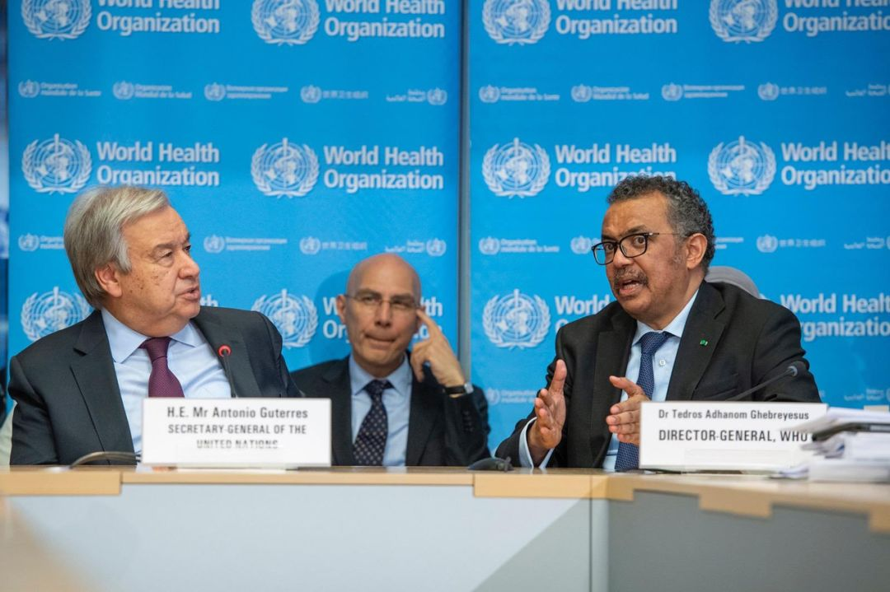
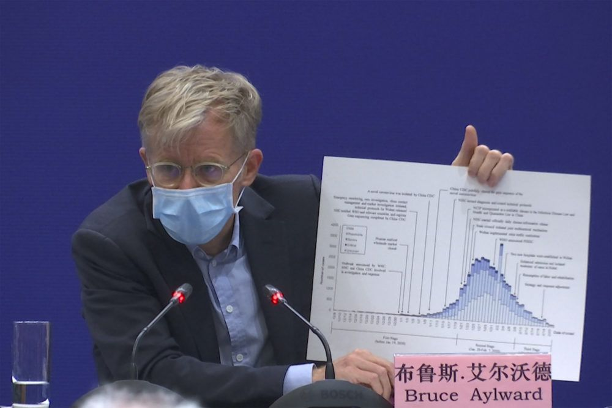

全球股市战战兢兢，世卫否定大流行病
原文链接 备份链接 世界卫生组织官员对韩国和伊朗等地爆发新冠病毒疫情表示担忧，但表示情况尚未上升到大流行病的程度。在美欧金融市场，这一模式已变得清晰：新增确诊病例数=增加的市场恐慌=疲弱的资本市场。这一模式会否必然在中国出现，尚待观察 …

关于新冠病毒疫情，一如既往，每天的数字变化是第一关注要素。
在 2 月 24 日世卫组织关于新冠病毒疫情的媒体通报会上，总干事谭德塞像往常一样从最新数字谈起：截至日内瓦时间 24 日上午 6 点，中国向世卫组织报告了共 77,362 例新型冠状病毒确诊病例，其中包括 2,618 例死亡。
在过去的 24 小时内，中国报告了 416 例新增确诊病例和 150 例死亡。“我们对中国境内病例的持续下降感到欣慰。”谭德塞说。25 日上午，据数据显示，昨日中国除湖北以外的 30 个省区市和新疆生产建设兵团新增确诊病例数降至个位——为 9 例。
随后，谭德塞介绍了世卫组织与中国联合专家组在中国几个省，以及武汉的访查结果。关于病毒的传播性、疾病的严重程度，以及所采取措施的效果，联合专家组得出了一系列结论。
专家组发现，此次疫情在 1 月 23 日至 2 月 2 日这段时间内达到高峰并逐步稳定，而之后一直在稳步下降。同时，他们表示目前病毒本身未发现其发生了明显变异。从新冠病毒的致死率来看，武汉的病死率在 2% 到 4% 之间，而武汉以外地区的病死率为 0.7%。此外，轻症患者的康复时间大约为两周，患有严重或危重疾病的人则需要三到六周左右的时间康复。

图 | 世卫组织总干事谭德塞（来源：Twitter）
专家组表示，中国为控制疫情蔓延所采取的措施避免了更多的病例。但目前，仍然有部分问题无法给出准确答案，专家组已在报告中详细列明，并提出了 22 项建议。而作为世卫组织总干事高级顾问、也是联合专家考察组外方组长布鲁斯 · 艾尔沃德（Bruce Aylward）博士对中国 “战疫” 给出这样评价：“我们要认识到武汉人民所做的贡献，世界欠你们的。当这场疫情过去，希望有机会代表世界再一次感谢武汉人民，我知道在这次疫情过程中，中国人民奉献很多。”
布鲁斯 · 艾尔沃德还表示，在没有特效药、没有疫苗的情况下，中国的做法是有什么就用什么，能怎样拯救生命就怎么样拯救生命。而确诊患者数据的下降，表明中国的方法是目前唯一的被事实证明成功的方法。 他还提到，目前来说最重要的一条建议就是切勿沾沾自喜，未获全胜，不轻言胜利。虽然病例数目在下降，但人群依然是普遍易感的。同日，钟南山院士在接受媒体采访时也提到，防控意识需要保持，防控的级别完全可以改变。

图 | 布鲁斯·艾尔沃德博士（来源：Sam McNeil/AP）
对于网上热议的，是否会将此次新冠病毒疫情宣布为 “大流行” 一说，谭德塞对媒体表示：当中国境外的病例不到 100 例，其中有 8 例人与人之间的传播时，世卫组织便宣布了此次疫情为“国际关注的突发公共卫生事件”（PHEIC），而这也是世卫组织的最高警戒级别。
世卫组织在决定是否使用 “大流行” 一词来描述某一流行病，并不代表警戒程度的变化，而是取决于对病毒的地理传播、所引起疾病的严重程度，以及其对整个社会的影响的持续评估。“意大利、伊朗和韩国的病例骤然增加，令人深感忧虑。”谭德塞说，“但目前，我们没有看到这种病毒在全球不受控制地蔓延，也没有看到大规模的严重疾病或死亡事件。”
对于新型冠状病毒是否有可能 “大流行”，世卫组织总干事谭德塞对媒体说：“我理解你们问这个问题的原因。可能性是当然有的，但经过评估还没有到达那种地步。” 对于目前的疫情局势，他将其描述为“这一疾病在世界不同地区流行，以不同的方式影响国家，对之需要采取有针对性的对策。”
谭德塞表示，其他国家新病例的突然增加纵然令人十分担忧，但人们需要看到的是客观事实，而不是恐惧。“当然，也应该做好其可能发展为全球流行病的准备。”他补充道，“不过，此时此刻并不是该关注我们使用什么词来描述的时候。使用这个词，在现在既不会阻止一次感染，也不会拯救任何人的生命。现在是所有国家、社区、家庭和个人集中精力做好准备的时候。”
“我们并非生活在一个非黑即白的二元世界。”谭德塞对媒体说，“这不是非此即彼的问题。我们必须专心防控，同时尽我们所能为潜在的病毒长期存在的可能做好准备。防疫也没有放之四海而皆准的方法，每个国家都必须针对本国的国情进行自我风险评估。世卫组织也在继续进行自己的风险评估，并日夜监测这一流行病的演变情况。”
在媒体会上，他强调了三大重点：
所有国家都必须优先保护医务人员；
我们必须促进社区参与，保护最有可能罹患严重疾病的人，特别是老年人和有基础性健康问题的人；
为保护卫生系统脆弱的国家，我们必须尽最大努力在有能力的国家中控制住流行。
通报会的最后，谭德塞感谢了法国、德国、印度尼西亚、古巴和韩国的外交部长们对疫情应对措施办法的支持。同时，还感谢了欧盟委员会捐赠了 2.32 亿欧元。“这体现了全球团结互助精神，我为此感到鼓舞。”他说道，“法国、德国和瑞典还宣布将额外捐款。”
疫情对于世界各国来说，是一种共同的威胁。“我们唯有一道面对，才能一起克服困难。如果我们团结一致，如果各国家、各区域和全球的医疗卫生机构、媒体、私营部门，以及世界各地人民通力合作，就会形成巨大的集体力量。但若单枪匹马，我们必输无疑。万众一心，我们则一定能赢。”谭德塞最后说道。
-End-
参考：

原文链接 备份链接 世界卫生组织官员对韩国和伊朗等地爆发新冠病毒疫情表示担忧，但表示情况尚未上升到大流行病的程度。在美欧金融市场，这一模式已变得清晰：新增确诊病例数=增加的市场恐慌=疲弱的资本市场。这一模式会否必然在中国出现，尚待观察 …
原文链接 备份链接 澎湃新闻记者 刘栋 新冠肺炎疫情正在全球范围内急速发展。 刚刚过去的周末，全球多国疫情出现恶化。在东亚，韩国确诊病例增加了195%；在南欧，意大利病例增加了近50倍；伊朗和日本的病例也在快速上升，多个国家报告出现首例确 …
原文链接 备份链接 新冠肺炎疫情的发展形势，正在全球范围内急剧变化。 根据中国各省卫健委官方发布消息来看，截至 2 月 24 日上午 9 时，全国已有 23 个省（自治区、直辖市）在 23 日全天的新增确诊病例为零，其中包括北京、湖南、河 …
原文链接 备份链接 作者 | 第一财经 马晓华 突然闯入武汉的新冠病毒，给中国带来了一场非常战“疫”。 2月22日，距离武汉市卫健委发布“不明原因肺炎”的第一则通报（2019年12月31日），仅仅52天。但是病例数，已经从最初与华南海鲜 …
原文链接 备份链接 2 月 17 日，《中华流行病学杂志》杂志上，中国疾病预防控制中心新型冠状病毒肺炎应急响应机制流行病学组最新发表新冠肺炎研究。 在对截至 2020 年 2 月 11 日中国内地报告的 超过 7 万病例的流行病学特征进行 …